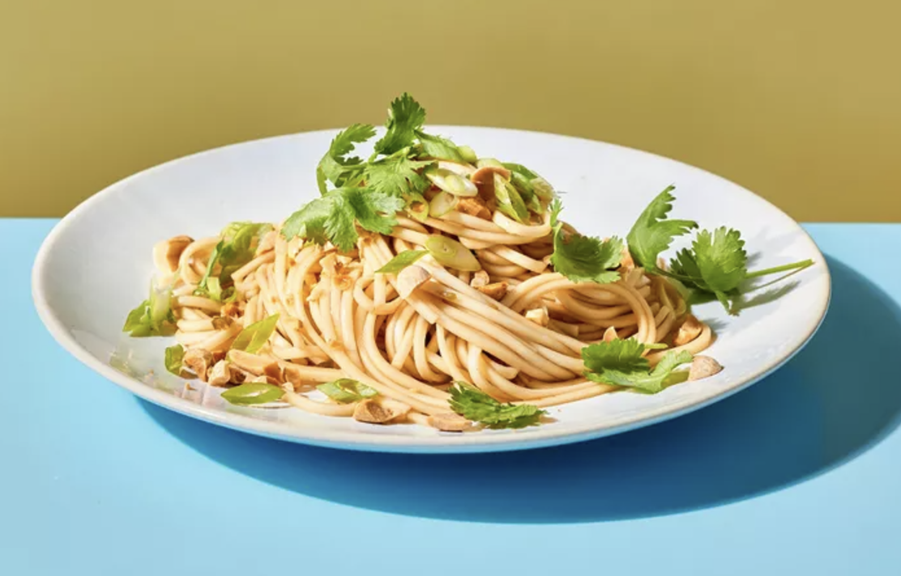

Chilled Lo Mein Noodles

Description
Chilled Lo Mein Noodles with Szechuan Peppercorns is a refreshing twist on a classic Asian dish. Using pantry-friendly dried lo mein noodles, this recipe pairs them with a zesty vinaigrette made from peanut oil, rice vinegar, soy sauce, and a hint of sweetness. The kick from minced jalapeño and the numbing spice of crushed Szechuan peppercorns elevate the flavors, while toppings like dry-roasted peanuts, green onions, and fresh cilantro add texture and brightness. Perfect as a light, flavorful salad or side dish, this recipe is quick to prepare and irresistibly delicious.
Ingredients
- 6 ounces dried lo mein noodles (such as Simply Asia)
- 3 tablespoons peanut oil
- 3 tablespoons Chinese black rice vinegar or rice vinegar
- 1 tablespoon less-sodium soy sauce
- 1 tablespoon sugar
- 1 jalapeño pepper, minced (seeded if desired)
- 2 cloves garlic, minced
- 1 teaspoon Szechuan peppercorns, crushed
- 1/4 cup chopped dry-roasted peanuts
- 2 tablespoons chopped green onions
- 1 tablespoon fresh cilantro leaves
Steps to Prepare
- Cook the lo mein noodles according to the package directions. Drain and rinse with cold water until cool. Drain well and use kitchen shears to cut noodles into smaller pieces.
- In a small bowl, whisk together peanut oil, rice vinegar, soy sauce, sugar, minced jalapeño, garlic, and crushed Szechuan peppercorns until the sugar is dissolved to create the vinaigrette.
- In a serving bowl, toss the cooked noodles with the vinaigrette until evenly coated.
- Top the noodles with chopped dry-roasted peanuts, green onions, and fresh cilantro leaves. Serve immediately or refrigerate until ready to serve.